Travel agency
SQL Database - 2021
Le context de ce projet était qu'une agence de voyage souhaitait numériser son système d'information. Elle faisait donc appel à notre jeune start-up afin d'élaborer une base de données.
Afin de répondre au mieux à leur besoin, il fallait que la base de données prenne en compte les données des clients, des membres du personnel, les différents voyages possibles et les informations de paiement.
REFORMULATION DU BESOIN
Comme dis précédement, la base de données doit prendre en compte un grand nombre de données et d'information par rapport à la clientelle ou les données de l'entreprise.
Pour les clients, nous devons prendre en compte que chaque client possède :
- Un nom
- Un prénom
- Un numéro de téléphone
- Une adresse électronique
- Une adresse de facturation
- Une adresse de livraison
Chaque membre du personnel possède également un certain nombre d'informations :
- Un nom
- Un prénom
- Un numéro de téléphone
- Une adresse électronique
- Une date d'embauche
- Une adresse postale
Ensuite nous avons les différents voyage qui ont une ou plusieurs étapes qui comportent chacunes :
- Une ville de départ
- Une ville d'arrivée
- Une heure de départ
- Une heure d'arrivée
- Un moyen de transport (ou plusieurs)
- Un kilométrages
- Un prix
- Un prix de forfait intra-ville
Pour terminer, il y a les informations liées au paiement :
- La date de paiement
- Le montant
- La date de commande liée au paiement
DICTIONNAIRE DE DONNEES
Afin que mes explications soient le plus intuitives pour vous, je procèderais par entités. Vous retrouverez donc pour chaque entité, la partie correspondante du dictionnaire de données.
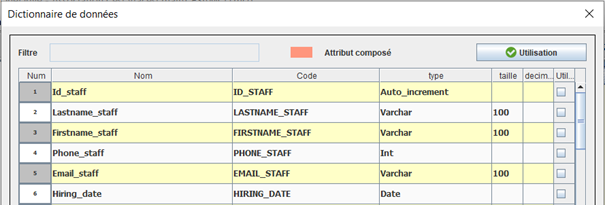Pour l'entité Staff, nos attributs sont Lastname, Firstname et Email qui sont de type VARCHAR comme se sont des chaînes de charactères, pour l'attribut Hiring_date, il s'agit du type Date car il est au format YYYY-MM-DD enfin Phone sera un entier.
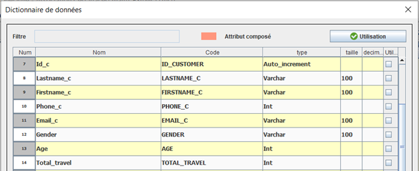Pour les attributs des noms, prénoms, emails et téléphones de l'entité Customer, le principe est le même que celui expliqué précédemment. Pour l'attribut Gender, il s'agira d'une chaîne de charactères, donc VARCHAR et Total_travel sera un entier.
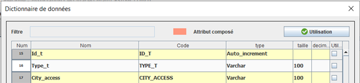Pour la troisième entité, nous indiquons le type de transport ainsi que les transports autorisés dans la ville grâce à VARCHAR car nous sommes en présence d'une chaîne de charactères.
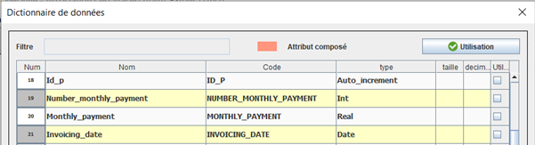Pour la quatrième entité, nous avons d'abord commencé par indiquer Number_monthly à l'aide d'un entier, le coût de la mensualité Monthly_payment avec un réel puis Invoicing_date. Cependant après réflexion, nous supprimons l'attribut Monthly_payment car nous pourrons le calculer à l'aide d'une requête ce qui rendra notre base de données plus optimale.
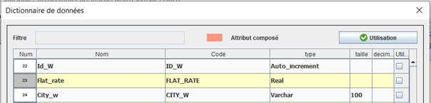Pour l'entité Waypoint, le forfait, Flat_rate, sera de type réel et City_w sous la forme d'une chaîne de charactères.
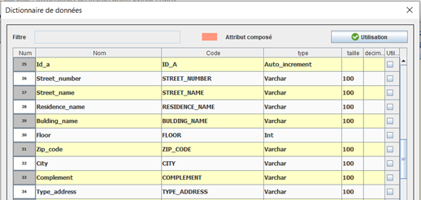Pour cette entité, tous les attributs seront sous forme VARCHAR à l'exception de l'étage qui sera un entier. Notez que nous avons ajouté un attribut supplémentaire si nous avons besoin d'ajouter des indications plus précises sur l'addresse. Le Zip_code est égalment une chaîne de charactères car dans certains pays, le code postal contient des lettres et des chiffres.
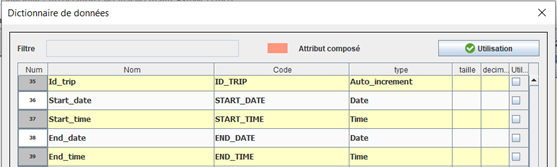Pour l'entité Trip, les dates seront de type DATE et les heures de type TIME.
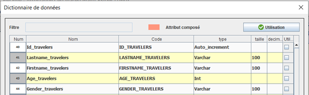Pour celle-ci, c'est le même principe que pour l'entité Customers.
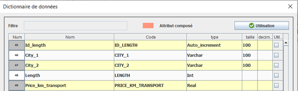Les villes seront des VARCHAR, la Length sera un entier et nous ajoutons un attribut Price_km_transport en réel pour indiquer un prix par kilomètre.
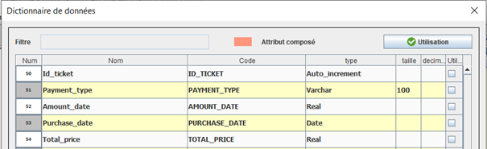L'entité Ticket aura comme attributs Payment_type en VARCHAR, Purchase_date en DATE, Amount_date en REAL. Cependant, après réfkexion, nous avons décidé de ne pas mettre l'attribut MTotal_price car nous le calculerons tout comme l'attribut Monthly_payment.
MODELE CONCEPTUEL DE DONNEES
Grâce au dictionnaire de données, nous avons pu élaborer nos différentes entités, les liens entre elles
ainsi que les cardinalités. C'est ainsi que nous obtenons le modèle conceptuel de données.
Le modèle conceptuel de données (MCD) est une représentation graphique afin de pouvoir visualiser
facilement les informations et les liaisons contenues dans la base de données.
L'objectif de la création d'un modèle conceptuel de données est d'établir les entités, leurs attributs et leurs relations. A ce niveau de la modélisation des données, il n'y a pratiquement aucun détail disponible sur la structure réelle de la base de données.
MODELE LOGIQUE DE DONNEES
Selon IBM, il s'agit du "processus de création d'une représentation visuelle de tout ou partie d'un système d'information afin de communiquer les connexions entre les points et les structures de données". Le fait de pouvoir visualiser ces relations entre les structures de données permet aux organisations de déterminer les domaines d'activité qui doivent être améliorés.
Nous avions réaliser le MCD sur JMerise mais nous avons fait un MLD différent de la conversion faite sur JMerise car nous n'étions pas sur la normalisation, et ne ne voyons pas les différences le MPD. Le MLD permet juste de transformer les relations du MCD en tables de relations selon les cardinalités.
MODELE DE DONNEES PHYSIQUE
Les modèles de données physique sont utilisés pour visualiser la structure physique des bases de données et des fichiers de données, contrairement aux MLD qui sont utilisés pour visualiser les entités de données, les attributs, les clés et les relations. Le MPD est très similaire à celui-ci sauf qu'il prend en compte les types de données et les liens entre les tables sont nommés par des clés communes. Les tables de relations, en revanche, restent inchangées.
Grâce à tous ses schémas, tables d'entités, tables de relations et types de données, nous pouvons produire un script SQL pour pouvoir ensuite importer la base de données vers MySQL, entrer les données et lancer les requêtes souhaitées par l'agence de voyage.
SCRIPT DE LA BASE DE DONNEES
Dans cette partie je vais expliquer comment la base de données a été construite. Pour mieux imager, je vais utiliser l'exemple de la table "address".
Drop table
Comme la base de données est expérimentale et qu'elle va être sujet à souvent être modifiée, supprimée et recréée, on commence par supprimer les tables déjà existante avec la commande suivante :
DROP TABLE IF EXISTS address;
Create Table
Ensuite nous créons la table "address" avec les différents attributs que nous souhaitons en précisant le type de données attendues.
CREATE TABLE `address` (
`Id_a` int NOT NULL AUTO_INCREMENT,
`Street_number` varchar(100) DEFAULT NULL,
`Street_name` varchar(100) DEFAULT NULL,
`Residence_name` varchar(100) DEFAULT NULL,
`Building_name` varchar(100) DEFAULT NULL,
`Floor` int DEFAULT NULL,
`Zip_code` varchar(100) DEFAULT NULL,
`City` varchar(25) DEFAULT NULL,
`Complement` varchar(100) DEFAULT NULL,
`Type_address` varchar(100) DEFAULT NULL,
PRIMARY KEY (`Id_a`)
)
Insert into
Pour terminer on implante les données dans la base de données afin de pouvoir y faire des requêtes.
INSERT INTO `address` VALUES
(1,'90','Avenue Jules Ferry','','RUCHE',2,'2200','SOISSONS','','Payment'),
(2,'24','Rue de la République','Les terrases du vallon','',1,'69001','Lyon','BIS','payment'),
(3,'69','Rue Reine Elisabeth','','Rivage Bleu',0,'48000','MENDE','','Payment'),
(4,'18','Rue des six frères Ruellan','Domaine du pin','',2,'13300','SALON-DE-PROVENCE','','payment'),
(5,'84','Square de la couronne','','Residence 7',4,'75002','PARIS','BIS','Payment'),
(6,'77','Boulevard Bryas','Charmille','B7',7,'77190','DAMMAIRE-LES-LYS','','Payment'),
(7,'167','Rue de saint germain','Villa Boisée','',5,'93200','GAGNY','','Payment '),
(8,'11','Rue Petit Fusterie','L Ecrin du bosquet','',3,'12000','BOURG-EN-BASSE','','Payment '),
(9,'13','Boulevard de Normandie','','Jardin des Amandiers',2,'97200','FORT-DE-FRANCE','','Payment '),
(10,'29','Place Charles de Gaulle','Villa Azalée','',3,'30100','ALES','','Delivery ');
LES REQUETES
Le nombre de clients
Afin de connaître le nombre de client, on utilise la fonction agrégée "count(Id_c)" qui nous permet de compter le nombre d'identifiants dans la table des clients.
SELECT count(Id_c) FROM customers;
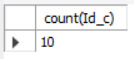
Le nombre de clients par ville
Nous comptons les identifiants des clients à partir de la table customers, puis nous joignons la table
customers à la table address, en passant par la table customers_address.
Nous regroupons ensuite les clients par ville, afin de connaître le nombre de clients pour chaque ville.
SELECT count(customers.Id_c) AS Customer_number_per_city, address.city FROM customers
INNER JOIN customers_address ON customers.Id_c = customers_address.Id_c_customers
INNER JOIN address ON customers_address.Id_a_address = address.Id_a
GROUP BY address.city;
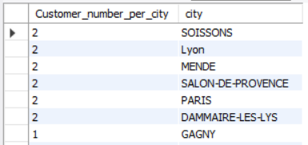
Le cout moyen d'un voyage
Pour cette 3ème requête, j'utilise la commande SELECT et pour éviter les redondances dans les résultats,
j'ajoute DISTINCT après le mot SELECT.
Ensuite, je calcule la somme de tous les forfaits, et la somme de mes longueurs multipliée par 0,3 (1
kilomètre sera facturé 30cts). Après, j'additionne ces deux résultats que je divise par l'Id_ticket max
(ici 10 car nous avons 10 tickets).
Enfin, je joins mes différentes tables avec la fonction INNER JOIN (car je veux qu'il retourne les
enregistrements lorsqu'il y a au moins une ligne dans chaque colonne qui correspond à la condition),
c'est-à-dire : ticket_way_point, way_point, ticket_length et length.
SELECT DISTINCT (sum(Flat_rate) + sum(length*0.3)) / max(Id_ticket) AS total FROM ticket
INNER JOIN ticket_way_point ON ticket.Id_ticket = ticket_way_point.Id_ticket_Ticket
INNER JOIN ticket_length ON ticket.Id_ticket = ticket_length.Id_ticket_Ticket
INNER JOIN length ON ticket_length.Id_length_Length = length.Id_length;
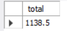
Les villes les plus populaires
J'ai commencé par faire les requêtes qui se trouvent à l'intérieur du premier FROM. Commençons par celle qui
va de la ligne 3 à la ligne 9 :
Cette requête se projette sur la colonne City_2 qui est la ville d'arrivée d'un voyage longue distance que
je renomme City. Les sélections servent simplement à relier nos tables et à éviter les doublons. À partir
des liens entre mes tables Ticket, Length et Ticket_length, je compte le nombre de fois où chaque ville
apparaît en fonction des voyages commandés par les clients, ce qui est appelé x_2. Je l'appelle ensuite t2
pour me faciliter la tâche par la suite.
Je passe ensuite à la requête de la ligne 3 à 9 :
Cette requête suit le même principe que la première. Elle est projetée sur la colonne Ville_1 qui est la
ville de départ d'un voyage interurbain que je renomme Ville. Les sélections sont toujours utilisées pour
lier nos tables, en évitant les doublons. A partir des liens entre mes tables Ticket, Length et
Ticket_length, je compte le nombre de fois où chaque ville apparaît en fonction des voyages commandés par
les clients, ce qui est nommé x_1. Je l'appelle ensuite t1 pour me faciliter la tâche par la suite.
Maintenant que les requêtes à l'intérieur du FROM sont définies, je peux construire ma requête principale.
Je projette City dans la sous-requête t1, puis j'ajoute mes résultats x_1 et x_2. J'utilise ensuite une
sélection pour dire que la ville dans la table t1 résultante est la même que dans la table t2. Je regroupe
ensuite les villes de la table t1.
SELECT t1.City, (x_1 + x_2)
FROM (
SELECT t.City_2 AS City, count(t.City_2) AS x_2
FROM (
SELECT length.City_2
FROM ticket, length, ticket_length
WHERE ticket.Id_ticket = ticket_length.Id_ticket_Ticket
AND length.Id_length = ticket_length.Id_length_Length)
GROUP BY City_2) AS t2,
(SELECT t.City_1 AS City, count(t.City_1) AS x_1
FROM (
SELECT length.City_1
FROM ticket, length, ticket_length
WHERE ticket.Id_ticket = ticket_length.Id_ticket_Ticket
AND length.Id_length = ticket_length.Id_length_Length)
GROUP BY City_1) AS t1
WHERE t1.City = t2.City
GROUP BY t1.City;
Le pourcentage de deplacements interurbains et intra-urbains
Pour cela je calcule à l'aide de l'agrégat count(DISTINCT length.Id_length)mon nombre d'Id_length qui
représente mon nombre de voyages interurbains, le distinct est utilisé pour sélectionner tous les id_lenght
qui n'ont pas la même valeur. Ensuite, j'effectue une addition entre deux fonctions agrégées count() qui
représente l'addition de mes déplacements intra/interurbains.
Enfin, je divise mon premier count() par l'addition des deux autres count().
Les différentes jointures internes sont là pour relier toutes les tables nécessaires au calcul.
SELECT (count(DISTINCT length.Id_length) / (count(DISTINCT length.Id_length) + count(DISTINCT way_point.Id_w))*100) AS "pourcentage inter",
(count(DISTINCT way_point.ID_w) / (count(DISTINCT length.Id_length) + count(DISTINCT way_point.Id_way))*100) AS "pourcentage intra"
FROM length
INNER JOIN trip_length ON length.Id_length = trip_length.Id_length_Length
INNER JOIN trip ON trip.Id_trip = trip_length.Id_trip_Trip
INNER JOIN trip_way_point ON trip_way_point.Id_w_Way_point = way_point.Id_w;
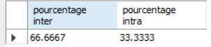
Le nombre de voyages utilisant l'avion
Nous comptons le nombre d'identifiants de voyage et le renommons trip_number.
Nous joignons ensuite la table trip à la table transport, en passant par la table trip_transport, pour
finalement filtrer le type de transport par Plane.
SELECT count(Id_trip) AS Trip_number FROM Trip
INNER JOIN trip_transport ON trip.Id_trip = trip_transport.Id_trip_Trip
INNER JOIN transport ON trip_transport.Id_t_transport = transport.Id_t
WHERE Type_t = 'Plane';
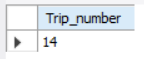
Le nombre de voyages utilisant l'avion et le bus
Nous commençons par additionner, à l'aide de la fonction d'agrégation COUNT, tous les Id_trips. Nous
utilisons deux sous-requêtes pour spécifier la requête. Tout d'abord, je joins mes tables transport et
trip_transport, puis nous ajoutons la condition WHERE Type_t = 'Bus', car nous cherchons le noms de voyages
dont le type de transport est le bus.
Enfin, grâce à la commande UNION ALL, car elle permet de tout ajouter, même les doublons, contrairement à la
fonction UNION. Nous ajoutons une deuxième requête, cette fois avec la condition WHERE Type_t = 'Plane'.
SELECT count(Id_trip) AS Trip_number
FROM (
SELECT Id_trip FROM Trip
INNER JOIN trip_transport ON trip.Id_trip = trip_transport.Id_trip_Trip
INNER JOIN transport ON trip_transport.Id_t_Transport = transport.Id_t
WHERE Type_t = 'Bus'
UNION ALL
SELECT Id_trip FROM Trip
INNER JOIN trip_transport ON trip_transport.Id_t_transport = transport.Id_t
WHERE Type_t = 'Plane') Trip;
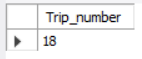
Le moyen de transport le plus utilise au cours des 3 derniers mois
Nous utilisons la fonction agrégat max(Type_t). Celle-ci nous permet de retourner dans notre cas "le moyen de transport le plus utilisé", la fonction agrégat max() recherche dans la table indiquée l'enregistrement le plus renseigné dans cas "train", cependant nous avons une contrainte de temps pour cela, nous ajoutons une condition en utilisant la fonction WHERE, pour ceci nous sélectionnons tous les voyages dont les dates de fin sont inférieures aux dates de fin de voyage. Nous sélectionnons donc tous les voyages dont les dates de fin de voyages sont inférieures à la date d'aujourd'hui moins 3 mois.
SELECT max(Type_t)
FROM Transport
INNER JOIN trip_transport ON transport.Id_t = trip_transport.Id_t_Transport
INNER JOIN trip ON trip_transport.Id_trip_Trip = trip.Id_trip
WHERE trip.End_date < Date_ADD(now(), INTERVAL - 3 MONTH);
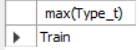
Le prix moyen des billets selon le transport
SELECT t1.Average_bus, t2.Average_boat, t3.Average_Plane, t4.Average_train
FROM (SELECT DISTINCT COALESCE (ROUND(AVG(length*0.3),2),0) AS Average_bus
FROM transport
INNER JOIN trip_transport ON trip_transport.Id_t_Transport = trip.Id_trip
INNER JOIN Trip ON trip_transport.Id_trip_trip = trip.Id_trip
INNER JOIN trip_length ON trip.Id_trip = trip_length.Id_trip_Trip
INNER JOIN length ON trip_length.Id_length_Length = length.Id_length
WHERE City_access = City_1 AND Type_t = 'Bus'
OR City_access = City_2 AND Type_t = 'Bus') AS t1
JOIN
Nous utilisons 4 fois le même formulaire, car nous cherchons le prix moyen des billets selon le transport.
Tout d'abord, nous sélectionnons les 4 transports, puis grâce à une sous-requête, nous calculons le prix
moyen grâce à AVG, la longueur x 0.3 que nous arrondissons à 2 décimales grâce à la fonction ROUND.
L'utilisation de COALESCE retourne la première valeur non nulle d'une liste (transformer le non nul en 0).
Nous joignons ensuite les différentes tables, ici : trip_transport, trip, trip_length et length.
Nous ajoutons enfin quelques conditions. Nous voulons que la ville de départ (City_1) corresponde à une
ville accessible par le moyen de transport, ici le bus, nous faison la même chose avec la vile d'arrivée
(City_2).
Pour terminons, nous réalisons 3 autres sous-requêtes pour les moyens de transport : bateau, train et avion
que nous joignons à cette dernière.
(SELECT DISTINCT COALESCE (ROUND(AVG(length*0.3),2),0) AS Average_boat
FROM transport
INNER JOIN trip_transport ON trip_transport.Id_t_Transport = trip.Id_trip
INNER JOIN Trip ON trip_transport.Id_trip_trip = trip.Id_trip
INNER JOIN trip_length ON trip.Id_trip = trip_length.Id_trip_Trip
INNER JOIN length ON trip_length.Id_length_Length = length.Id_length
WHERE City_access = City_1 AND Type_t = 'Boat'
OR City_access = City_2 AND Type_t = 'Boat') AS t2
JOIN
(SELECT DISTINCT COALESCE (ROUND(AVG(length*0.3),2),0) AS Average_plane
FROM transport
INNER JOIN trip_transport ON trip_transport.Id_t_Transport = trip.Id_trip
INNER JOIN Trip ON trip_transport.Id_trip_trip = trip.Id_trip
INNER JOIN trip_length ON trip.Id_trip = trip_length.Id_trip_Trip
INNER JOIN length ON trip_length.Id_length_Length = length.Id_length
WHERE City_access = City_1 AND Type_t = 'Plane'
OR City_access = City_2 AND Type_t = 'Plane') AS t3
JOIN
(SELECT DISTINCT COALESCE (ROUND(AVG(length*0.3),2),0) AS Average_train
FROM transport
INNER JOIN trip_transport ON trip_transport.Id_t_Transport = trip.Id_trip
INNER JOIN Trip ON trip_transport.Id_trip_trip = trip.Id_trip
INNER JOIN trip_length ON trip.Id_trip = trip_length.Id_trip_Trip
INNER JOIN length ON trip_length.Id_length_Length = length.Id_length
WHERE City_access = City_1 AND Type_t = 'Train'
OR City_access = City_2 AND Type_t = 'Train') AS t4
JOIN
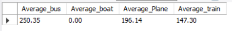
Le pourcentage de femme et d'homme
Nous divisons d'une part le nombre de voyageurs hommes et d'autre part le nombre de voyageurs femmes par le
nombre total de voyageurs.
Pour obtenir ce résultat, nous joignons la table des voyageurs à la table des voyages, en passant par les
tables des clients et des clients_voyages, et nous filtrons enfin par homme ou femme.
Nous multiplions chaque résultat par 100 pour obtenir un pourcentage.
SELECT (SELECT count(*)
FROM Travelers
WHERE travelers.gender = 'Man') /
(SELECT count(*)
FROM Travelers
INNER JOIN customers ON travelers.Id_c = customers.Id_c
INNER JOIN customers_trip ON customers.Id_c = customers_trip.Id_c_Customers
INNER JOIN trip ON customers_trip.Id_trip_trip = trip.Id_trip)*100 AS percentage_man,
(SELECT count(*)
FROM travelers
WHERE travelers.gender = 'Woman') /
(SELECT count(*)
FROM travelers
INNER JOIN customers ON travelers.Id_c = customers.Id_c
INNER JOIN customers_trip ON customers.Id_c = customers_trip.Id_c_Customers
INNER JOIN trip ON customers_trip.Id_trip_trip = trip.Id_trip)*100 AS percentage_woman;
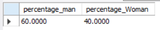